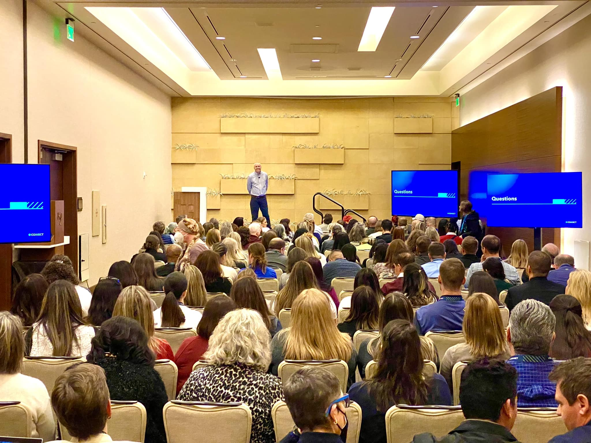

Starting a virtual bookkeeping business is one of the most practical paths to building a flexible, work-from-home income in today's economy. No accounting degree. No office. No complicated startup costs. Just a laptop, an internet connection, and a willingness to learn.
I've helped over 8,000 students launch their own bookkeeping businesses through Booming Bookkeeping Business, and the most common thing I hear from people who finally take the step is: "I wish I had done this sooner." That's not marketing — it's the honest feedback from people who discovered that the barrier to entry is far lower than they assumed.
Step 1: Understand What Virtual Bookkeepers Actually Do
A virtual bookkeeper manages a client's financial records remotely — categorizing transactions, reconciling accounts, generating reports, and keeping the books clean so the business owner can make informed decisions. Most small businesses don't have the budget for a full-time accountant, which is exactly why they hire virtual bookkeepers on a monthly retainer.
This is not the same as being a CPA or an accountant. You're not filing taxes or providing strategic financial advice. You're keeping records organized, accurate, and up to date — a service that's in high, consistent demand from virtually every small business in the country.
Step 2: Learn QuickBooks Online
QuickBooks Online is the industry standard for small business bookkeeping. It's cloud-based, widely adopted, and the tool your future clients are most likely already using or open to adopting. Learning it is essential — and it's far more approachable than it looks from the outside.
You don't need to master every feature on day one. Focus on the core functions: bank feeds, transaction categorization, accounts payable and receivable, and monthly reconciliation. That's the foundation of 90% of what most small business bookkeeping clients need.
Step 3: Set Up Your Business Structure
Before you start working with clients, get your business basics in place. Most people start as a sole proprietor, then form an LLC as they grow. You'll want a separate business bank account, a simple contract template, and a system for invoicing clients and tracking your own income.
Pricing is a common sticking point, but it doesn't have to be. Monthly retainer pricing — charging a flat fee per client per month — is the most common model for virtual bookkeepers, and it creates predictable, recurring income that grows as your client roster grows.
Step 4: Land Your First Client
The first client is the hardest, and also the most important milestone. Start with your existing network: friends, family, and local business owners you already know. You're not asking for a favor — you're offering a real service that they likely need. Once you have one or two clients, the confidence and referrals will follow.
Online platforms, LinkedIn, and local business groups are all viable channels for finding clients. As your experience grows, so does your ability to attract and convert new business without relying on personal connections.
The Free Training That Gets You Started
If you want to see exactly how this process works before committing to anything, the Keyboard Rich Challenge is a free 5-day virtual training that walks you through the entire opportunity. It's designed to give you a clear, practical picture of what virtual bookkeeping looks like as a business — not a vague promise, but an actual step-by-step introduction.
Conclusion
Virtual bookkeeping is not a get-rich-quick scheme. It's a real skill that real businesses pay for on a recurring basis. If you're willing to put in the time to learn the basics and take a few focused action steps, there is a clear path from zero to a sustainable, flexible income — built entirely from your laptop. The students I've worked with prove it every day.